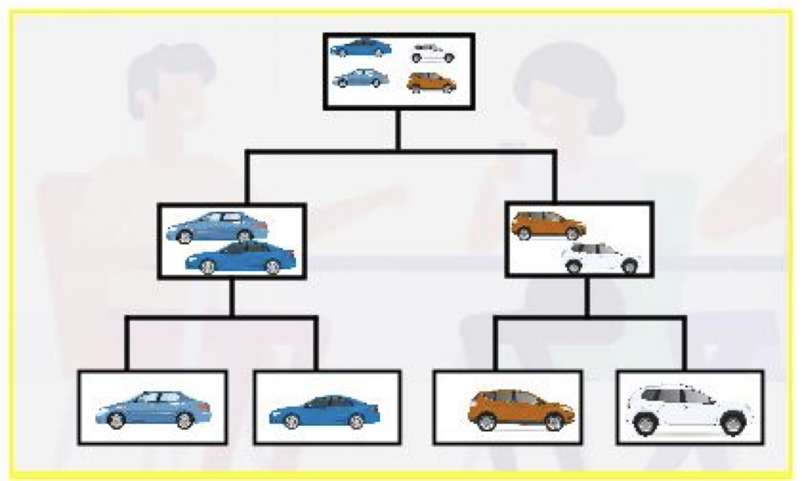

Clustering Methods
IN2004B: Generation of Value with Data Analytics
Department of Industrial Engineering
Agenda
- Aprendizaje Sin Supervisión
- Métodos de agrupamiento
- Método de K-Medias
- Agrupación Jerárquica
Aprendizaje Sin Supervisión
Tipos de Aprendizaje
En ciencia de datos, existen dos tipos principales de aprendizaje:
Aprendizaje supervisado (supervised learning). En el cual tenemos varios predictores y una respuesta. El objetivo es predecir la respuesta usando los valores de los predictores.
Aprendizaje sin supervisión (unsupervised learning). En el cual solo tenemos varios predictores. El objetivo es descubrir patrones en sus datos.
Tipos de Aprendizaje
En ciencia de datos, existen dos tipos principales de aprendizaje:
Aprendizaje supervisado (supervised learning). En el cual tenemos varios predictores y una respuesta. El objetivo es predecir la respuesta usando los valores de los predictores.
Aprendizaje sin supervisión (unsupervised learning). En el cual solo tenemos varios predictores. El objetivo es descubrir patrones en sus datos.
Aprendizaje Sin Supervisión
Su objetivo es organizar o agrupar datos para obtener información.
Contesta preguntas como:
- ¿Existe una forma informativa de visualizar los datos?
- ¿Podemos descubrir subgrupos entre las variables o entre las observaciones?
El aprendizaje sin supervisión es más desafiante que el aprendizaje supervisado porque que es subjetivo y no existe un objetivo simple para el análisis, como predecir una respuesta.
El aprendizaje sn supervisión también se le conoce como análisis exploratorio de datos.
Ejemplos de aprendizaje sin supervisión
Marketing. Identificar un segmento de clientes que poseen una alta tendencia a adquirir un producto específico.
Retail. Agrupar clientes según sus preferencias, estilo, elección de ropa y preferencias de tienda.
Ciencia médica. Facilitar el diagnóstico y tratamiento eficiente de sus pacientes así como el descubrimiento de nuevos medicamentos.
Sociología. Clasifique a las personas según su demografía, estilo de vida, nivel socioeconómico, etc.
Métodos de aprendizaje sin supervisión
Los Métodos de Agrupamiento tienen como objetivo encontrar subgrupos con datos similares en la base de datos.
El Análisis de Componentes Principales busca una representación alternativa de los datos para facilitar su comprensión cuando hay muchos predictores en la base de datos.
Aquí nos usaremos estos métodos en predictores \(X_1, X_2, \ldots, X_p\) que son numéricos.
Métodos de aprendizaje sin supervisión
Los Métodos de Agrupamiento tienen como objetivo encontrar subgrupos con datos similares en la base de datos.
El Análisis de Componentes Principales busca una representación alternativa de los datos para facilitar su comprensión cuando hay muchos predictores en la base de datos.
Aquí nos usaremos estos métodos en predictores \(X_1, X_2, \ldots, X_p\) que son numéricos.
Métodos de agrupamiento
Agrupan los datos de diferentes maneras para descubrir grupos con rasgos comunes entre ellos.

Métodos de agrupamiento
Dos métodos clásicos de agrupamiento son:
Método K-medias. Buscamos dividir las observaciones en K grupos.
Agrupación jerárquica. Dividimos las n observaciones en 1 grupos, 2 grupos, 3 grupos, …, hasta n grupos. Visualizamos las divisiones usando una gráfica llamada dendrograma.
Ejemplo
La base de datos “penguins.xlsx” contiene datos sobre 342 pingüinos en la Antártida. Los datos contienen:
- Longitud del pico (bill length) en milimetros.
- Profundidad del pico (bill depth) en milimetros.
- Longitud de la aleta (flipper length) en milimetros
- Peso (body mass) en gramos.

¿Podemos agrupar los pingüinos en base a estas características?
Datos
Python
Visualización de datos
Scatter plots
Método de K-Medias
El método de K-medias
Objetivo: Encontrar K grupos de observaciones tal que cada observación está en un grupo diferente.
Para esto, el método necesita dos elementos:
A. Una medida de “cercanía” entre observaciones. B. Un algoritmo que agrupe observaciones que están cercanas entre sí.
Una buena agrupación es aquella en la que las observaciones dentro de un grupo están cerca y las observaciones en diferentes grupos están lejos.
¿Cómo medimos la distancia entre observaciones?
Para predictores cuantitativos, utilizamos la distancia euclidiana.
Por ejemplo, si tenemos dos predictores \(X_1\) y \(X_2\) con observaciones dadas en la tabla:
| Observación | (X_1) | (X_2) |
|---|---|---|
| 1 | (X_{1,1}) | (X_{1,2}) |
| 2 | (X_{2,1}) | (X_{2,2}) |
La distancia euclideana es
\[d = \sqrt{(X_{1,1} - X_{2,1})^2 + (X_{1,2} - X_{2,2})^2 }\]

Podemos extender la distancia euclidiana para medir la distancia entre observaciones cuando tenemos más predictores. Por ejemplo, con 3 predictores tenemos
| Observación | (X_1) | (X_2) | (X_3) |
|---|---|---|---|
| 1 | (X_{1,1}) | (X_{1,2}) | (X_{1,3}) |
| 2 | (X_{2,1}) | (X_{2,2}) | (X_{2,3}) |
Donde la distancia euclideana es
\[d = \sqrt{(X_{1,1} - X_{2,1})^2 + (X_{1,2} - X_{2,2})^2 + (X_{1,3} - X_{2,3})^2 }\]
Problema con la distancia euclidiana
La distancia euclidiana depende de las unidades de medición de los predictores!
Predictores con ciertas unidades tienen mayor relevancia en el cálculo de la distancia.
Esto no es bueno ya que queremos que todos los predictores tengan la misma importancia al calcular la distancia euclidiana entre dos observaciones.
La solución es estandarizar las unidades de los predictores.
Algoritmo de K-medias
Elige un valor para K, el número de grupos.
- Asigna observaciones aleatoriamente a uno de los K grupos.
- Encuentra los centroides (puntos promedio) de cada grupo.
- Reasigna observaciones al grupo del centroide más cercano.
- Repite los pasos 3, 4 hasta que no haya más cambios.
K medias en Python
TBD
Estos 3 grupos son 3 especies de pingüinos
Adelie (Grupo 1)

Gentoo (Grupo 2)
Chinstrap (Grupo 3)

Comentarios
Seleccionar el número de grupos K es más un arte que una ciencia. Será mejor que aciertes con K, o estarás detectando patrones donde en verdad no los hay.
Necesitamos estandarizar todos los predictores.
El rendimiento de la agrupación por K-medias se ve afectado por la presencia de valores atípicos.
La solución del algoritmo es sensible al punto de partida. Por esto, normalmente se ejecuta varias veces y se reporta la mejor agrupación entre todas las ejecuciones.
Agrupación Jerárquica
Agrupación Jerárquica
Comienza con cada observación por sí sola en su propio grupo.
Luego, fusiona gradualmente los grupos que están cerca unos de otros.
Continuamos este proceso hasta que todas las observaciones estén en un grupo grande.
Finalmente, damos un paso atrás y vemos qué agrupación funciona mejor.

Componentes Esenciales
- Distancia entre dos observaciones.
- Usamos la distancia euclidiana.
- Debemos de estandarizar los predictores!
- Distancia entre dos grupos.
Distancia entre grupos.
La distancia entre dos grupos de observaciones se llama vinculación.
Hay varios tipos de vinculación. Los más usados son
- Vinculación completa
- Vinculación promedio
Vinculación Completa
La distancia entre grupos se mide utilizando la mayor distancia entre observaciones.

Promedio
La distancia entre grupos es el promedio de todas las distancias entre observaciones.
Algoritmo de Agrupamiento Jerárquico
Los pasos del algoritmo son los siguientes:
- Asigna cada observación a un grupo.
- Mide el vínculo entre todos los grupos.
- Fusiona los dos grupos que sean más similares.
- Luego, fusiona los dos siguientes grupos que sean más similares.
- Continua hasta que todos los grupos hayan sido fusionados.
Ejemplo
Consideremos un conjunto de datos en el archivo “Cereals.xlsx”. Los datos incluyen información nutricional de 77 cereales, entre otros datos.
En Python
Resultados: Dendrograma
- Un dendrograma es un diagrama de arbol que resume y visualiza el proceso de agrupamiento.
- Las observaciones estan en el eje horizontal y en la parte inferior del diagrama.
- El eje vertical muestra la distancia entre los grupos.
- Se lee de arriba a abajo.

¿Qué hacer con un dendrograma?
Dibujamos una linea horizontal a una altura específica para definir los grupos.
Esta linea define 3 grupos.
Esta linea define 5 grupos.

Dendrograma en Python
Comentarios
Recuerda que debemos estandarizar los predictores!
No es sencillo elegir el número correcto de grupos usando el dendrograma.
Los resultados dependen de la medida de vinculación utilizada.
- La vinculación completa resulta en grupos más estrechos.
- La vinculación promedio logra un equilibrio entre grupos estrechos y más delgados.
La agrupación jerárquica es útil para detectar valores atípicos.
Con estos métodos, no existe una única respuesta correcta; se debe considerar cualquier solución que exponga algunos aspectos interesantes de los datos.
James et al. (2017)
Return to main page

Tecnologico de Monterrey